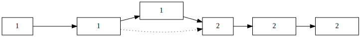

在QT中延时，让串口数据分段发送
Updated:
Contents
在串口通信中，我采用了空闲中断接收的方式来进行通信协议处理。比如我发送一串字符 AA AA 01 02 00 03 55 55 。协议如下：
- AA AA 为协议头
- 01 为协议 ID
- 02 00 为 data
- 03 为checksum
- 55 55 为协议尾
这一串数据发完后，如果没有其他数据发送，会触发STM32的空闲中断。系统检测到空闲中断就可以进行协议解析以及其他的一些处理。这样不需要采用队列或者其他的复杂数据结构，也能很好的处理通讯。但是这个协议也有两个问题。
QT的串口发送是有buffer的，它会把一个事件循环之内的所有发送给串口的数据都放到一个缓冲区，然后再一起发送出去。这样只有最后一个数据包能触发STM32的空闲中断，也就只有最后一个数据包能得到解析
在不使用队列或者其他数据结构的情况下，所有的数据包的 ID，data,checksum共用一个内存缓冲。如下图虚线，若是在第一个数据包没有处理完成的情况下，第二个数据包过来，就有可能更改ID ,data,checksum中的内容，从而导致数据处理错误，这是这个协议的缺陷。

要避免这两个问题，就需要上位机控制发送数据包的间隔时间。百度半天，终于找到解决方法。
方法一：1
2
3
4QTime t;
t.start();
while(t.elapsed()<1000)
QCoreApplication::processEvents();
方法二：
1 | QEventLoop eventloop; |
QT中也可以使用sleep函数，但是平台依赖性比较强。另外也可以采用单独开一个线程的方法，将串口发送放到一个单独的线程中，没测试，但估计效果差不多。